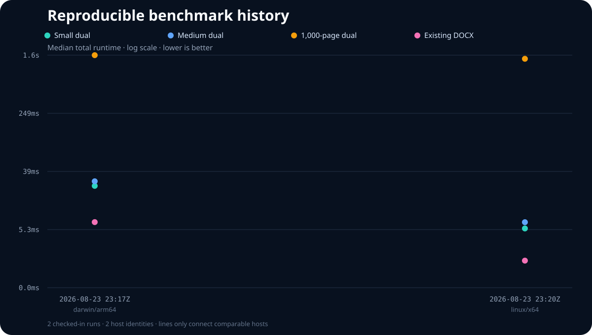

RusDox performance claims come from a versioned protocol, not a hand-timed screenshot. The checked-in JSON reports contain the machine, toolchain, exact input hashes, command flags, output sizes, median timings, and peak resident memory needed to interpret each result.

Open the long-term performance budget dashboard for per-scenario runtime, peak-memory ceilings, current usage, and headroom. Its machine-readable source is benchmarks/budgets.json; every scheduled run must stay inside both the relative regression policy and these absolute ceilings.
The chart is generated from benchmarks/history.json. Full, unrounded evidence lives in benchmarks/results/. Results from different CPUs or operating systems are separate observations, not interchangeable scores.
Reproduce a Run
Use an otherwise idle Linux or macOS host with /usr/bin/time, Node.js, and the locked Rust toolchain:
cargo build --release --locked --bin rusdox
node scripts/run_benchmark_protocol.mjs \
--binary target/release/rusdox \
--iterations 5 \
--warmup 1 \
--output target/benchmarks/local.jsonThe runner invokes the release binary separately for each scenario so peak memory is not inherited from an earlier tier. It writes atomically and leaves generated document artifacts in temporary directories.
The canonical parameters and fixtures are in benchmarks/protocol.json:
| Tier | Fixture | Scale |
|---|---|---|
| Small | examples/hello_world.yaml | 1 page |
| Medium | examples/dual_output_contract.yaml | 4 rendered PDF pages |
| Stress | examples/stress/stress_1000_pages.yaml | 1,000 logical pages |
| Existing DOCX | tests/fixtures/external-macos-textutil.docx | external package open/save |
Every spec tier runs four isolated pipelines:
validation: parse and semantic validation only;docx: parse, validate, compose, and DOCX write, with no PDF work;pdf: parse, validate, compose, and native PDF render, with no DOCX write;dual: parse, validate, compose, DOCX write, and native PDF render.
The external package scenario separately times Document::open and the recoverable DOCX save path. Use an individual mode when investigating one workload:
rusdox bench examples/dual_output_contract.yaml \
--pipeline pdf --iterations 5 --warmup 1 --format json
rusdox bench tests/fixtures/external-macos-textutil.docx \
--pipeline existing-docx --iterations 5 --warmup 1 --format jsonRecorded Fields
Each protocol report records:
- UTC timestamp and Git commit, including whether the worktree was dirty;
- CPU model and logical count, OS/platform/release, architecture, and total host memory;
- full
rustc --version --verboseand Cargo versions; - protocol version, release profile, warmup/measured iteration counts, and exact CLI flags;
- input path, SHA-256, byte size, and logical page tier;
- average, minimum, median, and maximum timings for every stage;
- DOCX/PDF output byte sizes and per-process peak resident memory.
Medians are the comparison signal. Minimum and maximum values remain available to expose noise instead of hiding it.
Regression Policy
The Scheduled benchmarks workflow runs every Monday and by manual dispatch. It is intentionally absent from pull-request checks: shared GitHub runners are noisy, and a performance signal should not make normal contributions flaky.
On a comparable Ubuntu/x86_64 host, scripts/check_benchmark_regression.mjs flags a scenario only when it exceeds both the relative and absolute materiality floor defined in benchmarks/protocol.json:
- runtime: more than 20% and more than 5 ms slower;
- peak memory: more than 25% and more than 16 MiB higher.
The same run also fails when any scenario exceeds its absolute median-runtime or peak-memory ceiling in benchmarks/budgets.json, even if a recently changed baseline would otherwise hide the regression.
Every scheduled report and regression comparison is retained as a downloadable Actions artifact. A baseline change should come from a successful scheduled/manual run and explain the code or environment change; do not raise thresholds to conceal a regression.
Update Published History
After inspecting a trustworthy report, copy it into benchmarks/results/ with a dated, host-specific filename, then regenerate the derived data and SVG:
node scripts/render_benchmark_history.mjs
git diff -- benchmarks/history.json assets/benchmark-history.svgNever edit the SVG or history summary by hand. The raw report is the source of truth.
Interpretation Limits
These measurements cover RusDox execution, not Word/Pages/Acrobat opening time. Font discovery, filesystem caches, CPU scheduling, thermal state, virtualization, and runner image changes can alter timings. Peak resident memory is sampled by the platform time implementation: Linux reports KiB and macOS reports bytes, normalized to bytes by the runner. Cross-host comparisons describe different environments and must not be marketed as regressions or universal speed guarantees.